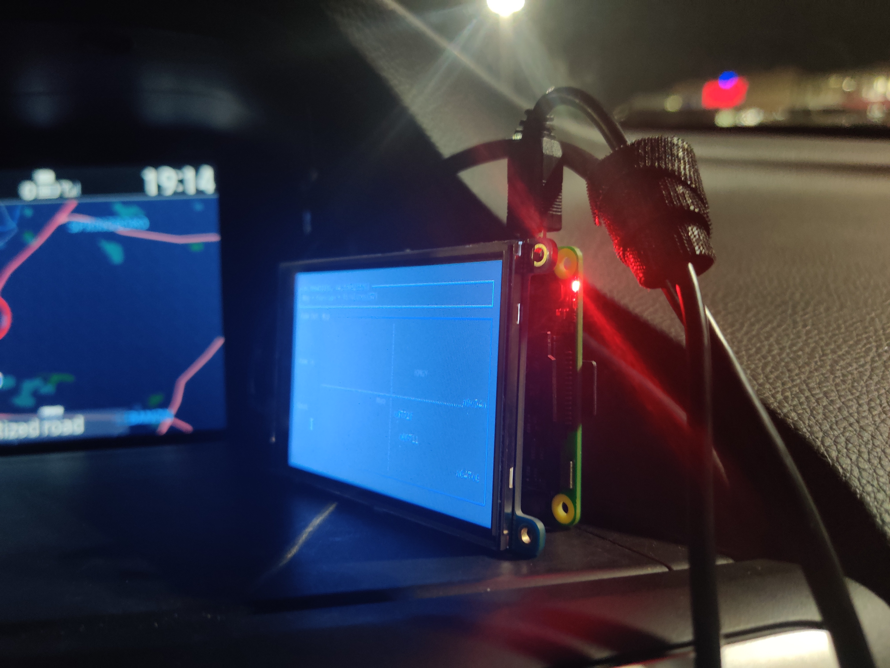

rsadsb

Welcome! This is the home page for the rsadsb project. A Rust software suite for ADS-B demodulation, decoding, and processing.
Features
- Easy Install - binaries are provided for multiple platforms within the github releases.
- Beautiful Applications - the radar application uses tui to create elegant terminal applications.
- Correct Decoding - rsadsb uses state of the art libraries such as deku to closely and correctly parse the ADS-B protocol.
- Touchscreen Enabled - radar is designed to use with both just a keyboard, or a touchscreen.
- Extendable Hackable source code - all source code is open-source and is easily modified.
Quickstart
See quickstart for the easy installation process.
Latest Release
Major
Minor
News
- rtl-sdr.com 2/15/2020:
Contributing
All source code for the project is stored on github.
ADS-B Quick Start Installation Guide
last edited: 03/25/22
This guide will give you a quick and easy to setup system to demodulate and decode ADS-B messages using this Rust software! For a good technical intro into what ADS-B is and how it is decoded, see the following guide.
Hardware
SDR (Software Defined Radio)
If your focus is on ease of use, as well as value(~$25) you should use an rtlsdr Software Defined Radio. A simple one with a filter and amplifier can be bought from adsbexchange.

Antenna
I bought the adsb-exchange antenna, and it serves me well. Make sure you don't have objects obstructing the view from the sky and you should be fine. If you want a super cheap solution, I have seen people talk about a can-tenna.

Connections
You will need a N-Type Male SMA to SMA Male connection cable. You can also find these on store.adsbexchange.com. This will allow you to connect the antenna directly to the rltsdr.
The rtlsdr should be plugged into your computer's USB port.
Software
dump1090_rs
dump1090_rs performs the demodulating of the 1090Mhz signal from an SDR (Software Defined Radio),
as well as forwarding the bytes to our application.
radar
radar parses the ADS-B messages into data that can be displayed on a map.

Linux dependencies
You will need to install the soapysdr library, plus the soapysdr driver for your SDR(rtlsdr).
Searching for soapysdr-rtlsdr and soapysdr should lead you on the right path.
The soapysdr library can be foud as libsoapysdr-dev on ubuntu based systems.
Install libclang, found as libclang-dev on ubuntu.
From Releases (x86_64)
Binaries can be downloaded from the latest releases of our software on github.
The following is an example for x86_64.
# download dump1090_rs
> wget https://github.com/rsadsb/dump1090_rs/releases/download/v0.5.1/dump1090_rs-x86_64-unknown-linux-gnu.tar.gz
> tar -xf dump1090_rs-x86_64-unknown-linux-gnu.tar.gz
# download radar
> wget https://github.com/rsadsb/adsb_deku/releases/download/v0.5.1/radar-x86_64-unknown-linux-gnu.tar.gz
> tar -xf radar-x86_64-unknown-linux-gnu.tar.gz
ARM releases are also available:
(Optional) Install from source for max performance
Instructions
Native CPU features
Building from source is recommended, since many of the DSP(Digital Signal Processing) algorithms benefit from
cpu features such as AVX(Advanced Vector Extensions) on x86 architectures.
These are currently only detected at compile time and is the reason for RUSTFLAGS="-C target-cpu=native" in the following install commands.
Install Compiler
Goto rustup.rs and follow instructions for installing rust and cargo.
The current msrv(minimum supported rust version) is 1.59.0.
Install soapysdr library
You will need the soapysdr library. For example, this is libsoapysdr-dev on ubuntu based platforms.
dump1090_rs from master branch
RUSTFLAGS="-C target-cpu=native" cargo install --git https://github.com/rsadsb/dump1090_rs
radar from master branch
RUSTFLAGS="-C target-cpu=native" cargo install --git https://github.com/rsadsb/adsb_deku rsadsb_apps --bin radar
Running!
Here is a sample usage of the software. Both applications have --help output for more options.
The --lat and --long will be the location of your antenna, and the --locations will print on the radar screen.
See Raspberry Pi in-car ADS-B Display - with Rust! for a blog on using this for an in-car ADS-B display.
# run demodulation with default settings for rtlsdr
> dump1090_rs
# run radar
> radar --disable-lat-long --lat="50.0" ---long="50.0" --locations "(one, 100.0,-50.0)" "(two, 50.0, -100.0)"
Questions/Help
- Open up a discussion on rsadsb/adsb_deku for
radarhelp. - Open up a discussion on rsadsb/dump1090_rs for
dump1090_rshelp. - You can also email me @
wcampbell1995[dot]gmail[dot]com.
Raspberry Pi in-car ADS-B Display - with Rust!
last edited: 03/26/22
Do you have aircraft flying above your car, or just want to see all the aircraft around your area as you sit in the passenger seat
or just really nerdy and want to use the Rust language and a Raspberry Pi in your car?
This project will leave you with a Raspberry Pi touchscreen that uses our radar and dump1090_rs applications to do just that!
This project is entirely open-source, checkout the software on github:


Overview
The following is myself using the touchscreen controls and viewing the positions of about ~60 airplanes over my car.

Here we can see the aircraft info being updated to the table in real-time as we receive more messages.

We can also see all the positions of all airplanes we have captured.


Requirements
See quickstart for the base hardware requirements and software installation.
Hardware
New hardware
- Raspberry Pi (I have a Raspberry Pi 3 Model B Rev 1.2, but any version should work)
- N-Type Male to N-Type Male connector
- A car ;)
- RS-840 Original Comet Antenna Lip Mount - No Cable
- SMA Male to N Female Bulkhead
- PiTFT Plus 480x320 3.5"
- GlobalSat BU-353-S4 USB GPS
Car Mount
The lip mount car antenna makes you the real nerd.

rtlsdr
The rtlsdr software defined radio allows us to capture the airplanes emitted signal.

GPS
Using the radar --gpsd option and a gpsd daemon, we automatically get the lat and lon position.

Software
PiTFT Plus
You will need to following the instructions located on the adafruit site for installing the touchscreen drivers: link
gpsd
To use the radar --gpsd setting, you will need the GPS daemon installed. This works nicely when you are in a car, since the GPS will take care of always setting your new lat/lon position.
> apt install gpsd
Add your USB device to the config, for example adding a serial USB GPS device /dev/ttyUSB0.
> cat /etc/default/gpsd
# Default settings for gpsd.
START_DAEMON="true"
GPSD_OPTIONS=""
DEVICES="/dev/ttyUSB0"
USBAUTO="true"
Restart the gpsd service, or start it if not running.
> systemctl restart gpsd
dwm
This is the simplest X server display manager I can find, leaving our applications running nicely with the small ARM processor on board the raspberry pi. I also used a patch that adds an autostart script.
> git clone https://git.suckless.org/dwm
> curl -O https://dwm.suckless.org/patches/autostart/dwm-autostart-20210120-cb3f58a.diff
> git apply dwm-autostart-20210120-cb3f58a.diff
> make
> sudo make install
Apply changes to ~/.Xinitrc file. Depending on your shell, you will need to auto login to your
raspberry pi and run startx to start dwm.
> cat ~/.Xinitrc
exec dwm
st
Simple Terminal.
> apt install st
dump1090
systemd
This will start dump1090 and attach to an SDR at every bootup.
Note you will need to change ExecStart and WorkingDirectory to whatever location you installed dump1090 to.
> cat /etc/systemd/system/dump1090.service
[Unit]
Description=Start ADS-B Demodulation Server
After=network.target
[Install]
WantedBy=multi-user.target
[Service]
Type=simple
ExecStart=/home/pi/.cargo/bin/dump1090
WorkingDirectory=/home/pi/.cargo/bin
Restart=always
RestartSec=5
StandardOutput=syslog
StandardErorr=syslog
SyslogIdentifier=%n
> systemctl enable --now dump1090
radar
autostart
Add to dwm autostart file: ~/.autostart. This will automatically start radar in st.
The following is an example of the autostart.sh file that I use.
If you want more airports, check out the --aiports option: image.
> cat ~/.dwm/autostart.sh
#!/usr/bin/sh
st -e ~/.cargo/bin/radar --lat="39.0" --long="-84.00" --scale="0.80" \
--gpsd --disable-lat-long \
--touchscreen \
--locations "(wpafb,39.827793,-84.045894)" "(KMGY,39.591672,-84.227865)" \
"(DAY,39.898899,-84.2287941)" "(CVG,39.0537296,-84.6500094)" "(CMH,39.9999399,-82.8893654)" \
"(IND,39.7168593,-86.2977839)" "(KAOH,40.7588499,-83.8936466)" "(FDY,40.6141522,-84.2637368)" \
"(fhq,39.4503696,-82.2616143)" "(mwo,39.4670316,-84.3879972)" "(rma,39.7298745,-84.8377054)" \
"(fma,38.2256493,-84.0172027)" "(fwa,41.0588807,-85.2668302)"
Discuss
- rtl-sdr.com article
- rtl-sdr.com twitter
- reddit/rust
- hackernews
- myriadRF(limesdr) OTA twitter
- myriadRF(limsdr) OTA article
rsadsb Releases

v0.5.1 Release Notes - Feb 13, 2022

Minor bugfix to the radar application.
Links / Changelogs
All code is released under the github/rsadsb account. Release binaries are available at the following links.
adsb_deku v0.5.1
See CHANGELOG.md for detailed notes on adsb_deku library, radar, and 1090.
The library docs.rs documentation for this release is here
dump1090_rs v0.5.1
See CHANGELOG.md for detailed notes on the dump1090_rs application.
radar
- fix: Swap
Airplanestable "Latitude" and "Longitude", found by reddit user @BanksOfTheOuchita (!111)
v0.5.0 Release Notes - Feb 12, 2022

rsadsb is happy to announce v0.5.0 of our library and tools. We're proud to have over 100 stars on the main repo, thanks for the support! A huge thanks to all.
See quickstart guide for a installation guide.
See Raspberry Pi in-car ADS-B Display - with Rust! for my blog post on using my libraries and applications for an in-car ADS-B display.
If you want to track Elon Musk with Rust, check this repo out ;)
Links / Changelogs
All code is released under the github/rsadsb account. Release binaries are available at the following links.
adsb_deku v0.5.0
See CHANGELOG.md for detailed notes on adsb_deku library, radar, and 1090.
The library docs.rs documentation for this release is here
dump1090_rs v0.5.0
See CHANGELOG.md for detailed notes on the dump1090_rs application.
Discuss
News
- rtl-sdr.com 2/15/2020: rsadsb: Terminal Based Aircraft Radar on the Raspberry Pi
- myraidRF OTA 2/25/2020: OTA: ADS-B Tracking at the Terminal, Open RAN Silicon, Beginner’s Guides, and More
radar
x86_64-unknown-linux-gnu
armv7-unknown-linux-gnueabihf
aarch64-linux-android

Updates
-
Now uses Mercator projection for display the airplanes on the map.
-
Add Mouse and touchscreen controls! This allows moving the map center location, as well as choosing the display mode. See the
--touchscreenoption for displaying zoom controls for platforms such as the raspberry pi.
-
Airport data can be downloaded from mborsetti/airportsdata and imported using the
--airportsand--airports-tz-filteroption. The following shows all airports big and small near my data collection site. The following is an example of zooming out and seeing all New_York and Chicago time zone airports.
This looks pretty cool even if it's very not useful :)
The following is an example of zooming out and seeing all New_York and Chicago time zone airports.
This looks pretty cool even if it's very not useful :)
 And Coverage!
And Coverage!

-
--citiesare now named--locations -
Range and Distance checks are now added, fixing some long standing bugs with mis-decoding lat/lon positions. (!101)
-
Added
Helptab with a table of key bindings: (!107)
adsb_deku (library)
- Thanks @amacd31 for fixing a bug in CPR calculations. (!78).
- Thanks @mikemorris for fixing a link in my README.md. (!61).
dump1090
- Now uses the soapysdr library for multi-sdr platforms support through the soapysdr-rs crate. Currently tested are the rtl-sdr and the hackrf support. If you test this on new SDR platforms, merge requests welcome for default gain settings!
v0.4.0 Release Notes - Dec 10, 2021

rsadsb is happy to announce v0.4.0 of our library and tools. This update focused on improving the accuracy of the library, as well as touching up the radar tui and improving performance.
adsb_deku v0.4.0
See CHANGELOG.md for detailed notes on adsb_deku library, radar, and 1090.
dump1090_rs v0.4.0
See CHANGELOG.md for detailed notes on the dump1090 application.
Discuss
News
radar

Updates
Thank you to @wiseman for helping me develop features.
- The Tab key can now be used to change the view to the pane.
- Airplane display was added for a detailed display of all call signs, vertical speed, lat, long, and number of messages.
- Possible mis-decodes were reduced by reducing the trust of messages with a time gap.
- Dynamic Lat/Long positions are now possible if you have a gpsd server.
- Logging was added to
./logsand can be controlled with theRUST_LOGenv variable. - A grayscale heatmap was added to the Coverage screen, giving the operator more detail on his sky coverage.
adsb_deku (library)
The library itself was pretty stable for this release, just fixing some minor bugs with parsing and improving the documentation.
The documentation for this release is here
dump1090
- The library is now styled in such a way that be tested from iq data, this will help prove the applications state in the future.
--hostand--portwere added to control TCP.- A good amount of time was given to make sure the application was release ready, this gave us around 9% faster demodulation and decode.
Thanks
I can try and not make this a cargo tree,
but I want to thank the fantastic libraries that are in the Rust ecosystem and people/projects that
have made this project achievable.
- My wife - for letting me attach an antenna to a window on our house and on my car ;)
- @sharkswitharms and contributors for deku
- @myrrlyn for bitvec
- @fdehau and contributors for tui-rs
- @pothosware and contributors for soapysdr
- @kevinmehall and contributors for rust-soapysdr
- @johnwstandford for the original
dump1090_rs - @cross-rs and contributors for cross
- adsb_deku and radar contributors
- dump1090_rs contributors
- @junzis for mode-s.org/decode
- @mborsetti for airportsdta
- @hawkw for tracing
- @crossterm-rs for crossterm